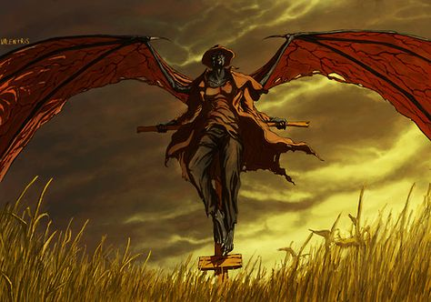

Posted
John Kelly Citzen
I've been living here for 6 months and loved every second of it. I've found 3 million dollar worth of gems I love it here !
John Kelly Citzen
I've been living here for 6 months and loved every second of it. I've found 3 million dollar worth of gems I love it here !
Pam Jackson Soccer Mom
Me and my family loves it here we go to the Omen towers every chance we get.
Micheal Thomas Ice Cream Shop Owner
I moved my paylor here when the city was built and I unsure about it a first but its the best decision I made my paylor is booming.
Mario O'neal Senior at Omen High School
Do not go anywhere near the mines at night its very dangerous some type of creature is down there from sunset to sunrise.
Joe Baxter Citzen
Don't let the lights and gems fool you yes you can make a fortune here but its high risk. This city is cursed if you ask me and I believe it has something to do with the night of the fire.
Roy Parker Former Police Officer
I've spent 20 years on the force before I moved here and I can honestly say this place is a trap. They lure you in with fortune but the dark truth is you can't leave or if you have to be lucky. There's a creature that won't people leave and if it does he's not around when he does. Before I quit the force I heard things about that blood gem in the museum belonging to that creature. Long as that gem is in that museum it won't leave. I'm not going to tell you not come but I will say its not called Omen for nothing.
